Estacionalidad del número de pasajeros del aeropuerto Juan Santamaría
Contents
6.1. Estacionalidad del número de pasajeros del aeropuerto Juan Santamaría¶
Importando y limpiando los datos¶
Los datos fueron obtenidos de la ARESEP
import numpy as np
import pandas as pd
import matplotlib.pyplot as plt
plt.style.use('seaborn-talk')
figpath = "../figures/"
plt.rc('figure', figsize=[8.0,4.0])
from statsmodels.graphics.tsaplots import plot_acf, plot_pacf
from statsmodels.tsa.x13 import x13_arima_select_order, x13_arima_analysis
from statsmodels.tsa.statespace.sarimax import SARIMAX
GITHUB_REPO = "https://raw.githubusercontent.com/randall-romero/econometria/master/data/"
DATAPATH = GITHUB_REPO if 'google.colab' in str(get_ipython()) else '../data/'
x13path = DATAPATH
meses = ['Enero', 'Febrero','Marzo','Abril','Mayo','Junio','Julio','Agosto','Setiembre','Octubre', 'Noviembre','Diciembre']
mesescorto = [x[:3] for x in meses]
meses2 = {mes: i for i, mes in enumerate(meses, start=1)}
FILENAME = "Datos-ARESEP-Pasajeros-por-aeropuerto.csv"
SJO = pd.read_csv(DATAPATH + FILENAME)
SJO.query('Aeropuerto =="Aeropuerto Internacional Juan Santamaría"', inplace=True)
SJO
| Aeropuerto | Mes | Año | Cantidad Nacionales | Cantidad Extrajeros | Cantidad En Tránsito | Cantidad Exentos | Total Pasajeros | |
|---|---|---|---|---|---|---|---|---|
| 0 | Aeropuerto Internacional Juan Santamaría | Diciembre | 2019 | 98254 | 153319 | 1420 | 0 | 252993 |
| 1 | Aeropuerto Internacional Juan Santamaría | Noviembre | 2019 | 69338 | 122130 | 600 | 0 | 192068 |
| 2 | Aeropuerto Internacional Juan Santamaría | Octubre | 2019 | 69836 | 102038 | 531 | 0 | 172405 |
| 3 | Aeropuerto Internacional Juan Santamaría | Setiembre | 2019 | 72172 | 101211 | 456 | 0 | 173839 |
| 4 | Aeropuerto Internacional Juan Santamaría | Agosto | 2019 | 57089 | 156401 | 370 | 0 | 213860 |
| ... | ... | ... | ... | ... | ... | ... | ... | ... |
| 103 | Aeropuerto Internacional Juan Santamaría | Mayo | 2011 | 30666 | 82713 | 2223 | 0 | 115602 |
| 104 | Aeropuerto Internacional Juan Santamaría | Abril | 2011 | 35224 | 103098 | 2221 | 0 | 140543 |
| 105 | Aeropuerto Internacional Juan Santamaría | Marzo | 2011 | 26900 | 128936 | 2794 | 0 | 158630 |
| 106 | Aeropuerto Internacional Juan Santamaría | Febrero | 2011 | 24621 | 105360 | 1888 | 0 | 131869 |
| 107 | Aeropuerto Internacional Juan Santamaría | Enero | 2011 | 39797 | 116312 | 1920 | 0 | 158029 |
108 rows × 8 columns
SJO.replace(meses2, None,inplace=True)
SJO
| Aeropuerto | Mes | Año | Cantidad Nacionales | Cantidad Extrajeros | Cantidad En Tránsito | Cantidad Exentos | Total Pasajeros | |
|---|---|---|---|---|---|---|---|---|
| 0 | Aeropuerto Internacional Juan Santamaría | 12 | 2019 | 98254 | 153319 | 1420 | 0 | 252993 |
| 1 | Aeropuerto Internacional Juan Santamaría | 11 | 2019 | 69338 | 122130 | 600 | 0 | 192068 |
| 2 | Aeropuerto Internacional Juan Santamaría | 10 | 2019 | 69836 | 102038 | 531 | 0 | 172405 |
| 3 | Aeropuerto Internacional Juan Santamaría | 9 | 2019 | 72172 | 101211 | 456 | 0 | 173839 |
| 4 | Aeropuerto Internacional Juan Santamaría | 8 | 2019 | 57089 | 156401 | 370 | 0 | 213860 |
| ... | ... | ... | ... | ... | ... | ... | ... | ... |
| 103 | Aeropuerto Internacional Juan Santamaría | 5 | 2011 | 30666 | 82713 | 2223 | 0 | 115602 |
| 104 | Aeropuerto Internacional Juan Santamaría | 4 | 2011 | 35224 | 103098 | 2221 | 0 | 140543 |
| 105 | Aeropuerto Internacional Juan Santamaría | 3 | 2011 | 26900 | 128936 | 2794 | 0 | 158630 |
| 106 | Aeropuerto Internacional Juan Santamaría | 2 | 2011 | 24621 | 105360 | 1888 | 0 | 131869 |
| 107 | Aeropuerto Internacional Juan Santamaría | 1 | 2011 | 39797 | 116312 | 1920 | 0 | 158029 |
108 rows × 8 columns
SJO.sort_values(['Año','Mes'], inplace=True)
SJO
| Aeropuerto | Mes | Año | Cantidad Nacionales | Cantidad Extrajeros | Cantidad En Tránsito | Cantidad Exentos | Total Pasajeros | |
|---|---|---|---|---|---|---|---|---|
| 107 | Aeropuerto Internacional Juan Santamaría | 1 | 2011 | 39797 | 116312 | 1920 | 0 | 158029 |
| 106 | Aeropuerto Internacional Juan Santamaría | 2 | 2011 | 24621 | 105360 | 1888 | 0 | 131869 |
| 105 | Aeropuerto Internacional Juan Santamaría | 3 | 2011 | 26900 | 128936 | 2794 | 0 | 158630 |
| 104 | Aeropuerto Internacional Juan Santamaría | 4 | 2011 | 35224 | 103098 | 2221 | 0 | 140543 |
| 103 | Aeropuerto Internacional Juan Santamaría | 5 | 2011 | 30666 | 82713 | 2223 | 0 | 115602 |
| ... | ... | ... | ... | ... | ... | ... | ... | ... |
| 4 | Aeropuerto Internacional Juan Santamaría | 8 | 2019 | 57089 | 156401 | 370 | 0 | 213860 |
| 3 | Aeropuerto Internacional Juan Santamaría | 9 | 2019 | 72172 | 101211 | 456 | 0 | 173839 |
| 2 | Aeropuerto Internacional Juan Santamaría | 10 | 2019 | 69836 | 102038 | 531 | 0 | 172405 |
| 1 | Aeropuerto Internacional Juan Santamaría | 11 | 2019 | 69338 | 122130 | 600 | 0 | 192068 |
| 0 | Aeropuerto Internacional Juan Santamaría | 12 | 2019 | 98254 | 153319 | 1420 | 0 | 252993 |
108 rows × 8 columns
SJO.index = pd.period_range(start=f"{SJO['Año'].iloc[0]}-{SJO['Mes'].iloc[0]}", periods=SJO.shape[0], freq='M')
SJO
| Aeropuerto | Mes | Año | Cantidad Nacionales | Cantidad Extrajeros | Cantidad En Tránsito | Cantidad Exentos | Total Pasajeros | |
|---|---|---|---|---|---|---|---|---|
| 2011-01 | Aeropuerto Internacional Juan Santamaría | 1 | 2011 | 39797 | 116312 | 1920 | 0 | 158029 |
| 2011-02 | Aeropuerto Internacional Juan Santamaría | 2 | 2011 | 24621 | 105360 | 1888 | 0 | 131869 |
| 2011-03 | Aeropuerto Internacional Juan Santamaría | 3 | 2011 | 26900 | 128936 | 2794 | 0 | 158630 |
| 2011-04 | Aeropuerto Internacional Juan Santamaría | 4 | 2011 | 35224 | 103098 | 2221 | 0 | 140543 |
| 2011-05 | Aeropuerto Internacional Juan Santamaría | 5 | 2011 | 30666 | 82713 | 2223 | 0 | 115602 |
| ... | ... | ... | ... | ... | ... | ... | ... | ... |
| 2019-08 | Aeropuerto Internacional Juan Santamaría | 8 | 2019 | 57089 | 156401 | 370 | 0 | 213860 |
| 2019-09 | Aeropuerto Internacional Juan Santamaría | 9 | 2019 | 72172 | 101211 | 456 | 0 | 173839 |
| 2019-10 | Aeropuerto Internacional Juan Santamaría | 10 | 2019 | 69836 | 102038 | 531 | 0 | 172405 |
| 2019-11 | Aeropuerto Internacional Juan Santamaría | 11 | 2019 | 69338 | 122130 | 600 | 0 | 192068 |
| 2019-12 | Aeropuerto Internacional Juan Santamaría | 12 | 2019 | 98254 | 153319 | 1420 | 0 | 252993 |
108 rows × 8 columns
SJO.drop(['Aeropuerto', 'Mes', 'Año', 'Cantidad En Tránsito', 'Cantidad Exentos','Total Pasajeros'], axis=1,inplace=True)
SJO.rename(columns={'Cantidad Nacionales':'nacionales', 'Cantidad Extrajeros':'extranjeros'}, inplace=True)
SJO
| nacionales | extranjeros | |
|---|---|---|
| 2011-01 | 39797 | 116312 |
| 2011-02 | 24621 | 105360 |
| 2011-03 | 26900 | 128936 |
| 2011-04 | 35224 | 103098 |
| 2011-05 | 30666 | 82713 |
| ... | ... | ... |
| 2019-08 | 57089 | 156401 |
| 2019-09 | 72172 | 101211 |
| 2019-10 | 69836 | 102038 |
| 2019-11 | 69338 | 122130 |
| 2019-12 | 98254 | 153319 |
108 rows × 2 columns
Gráficos de estacionalidad¶
Serie de tiempo original contra el tiempo¶
sjodatos = SJO/1000
fig, ax = plt.subplots()
sjodatos.plot(ax=ax)
ax.set(xlabel='', ylabel='miles de pasajeros', title='Cantidad de pasajeros del aeropuerto Juan Santamaría, por mes y residencia')
fig.savefig(figpath+'SJO-pasajeros.pdf', bbox_inches='tight')
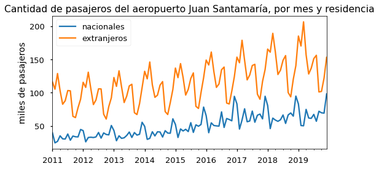
Cada mes en su propio gráfico¶
sjodatos.index = pd.MultiIndex.from_arrays([sjodatos.index.year, sjodatos.index.month])
sjodatos
| nacionales | extranjeros | ||
|---|---|---|---|
| 2011 | 1 | 39.797 | 116.312 |
| 2 | 24.621 | 105.360 | |
| 3 | 26.900 | 128.936 | |
| 4 | 35.224 | 103.098 | |
| 5 | 30.666 | 82.713 | |
| ... | ... | ... | ... |
| 2019 | 8 | 57.089 | 156.401 |
| 9 | 72.172 | 101.211 | |
| 10 | 69.836 | 102.038 | |
| 11 | 69.338 | 122.130 | |
| 12 | 98.254 | 153.319 |
108 rows × 2 columns
sjodatoscuadro = sjodatos.unstack()
sjodatoscuadro
| nacionales | ... | extranjeros | |||||||||||||||||||
|---|---|---|---|---|---|---|---|---|---|---|---|---|---|---|---|---|---|---|---|---|---|
| 1 | 2 | 3 | 4 | 5 | 6 | 7 | 8 | 9 | 10 | ... | 3 | 4 | 5 | 6 | 7 | 8 | 9 | 10 | 11 | 12 | |
| 2011 | 39.797 | 24.621 | 26.900 | 35.224 | 30.666 | 30.401 | 37.952 | 28.605 | 34.890 | 33.800 | ... | 128.936 | 103.098 | 82.713 | 87.984 | 103.344 | 102.893 | 64.575 | 62.624 | 77.548 | 90.298 |
| 2012 | 43.013 | 26.159 | 32.688 | 33.113 | 32.652 | 33.565 | 40.250 | 31.762 | 39.582 | 37.254 | ... | 130.949 | 106.010 | 82.235 | 89.148 | 105.916 | 105.745 | 67.775 | 60.425 | 79.305 | 92.365 |
| 2013 | 43.173 | 27.828 | 35.259 | 31.420 | 32.242 | 35.732 | 40.899 | 32.744 | 40.120 | 36.303 | ... | 133.010 | 108.496 | 85.302 | 94.980 | 110.324 | 112.790 | 69.996 | 67.254 | 83.521 | 107.738 |
| 2014 | 49.453 | 29.900 | 31.389 | 41.355 | 35.077 | 41.290 | 40.989 | 33.387 | 42.932 | 39.352 | ... | 146.267 | 111.881 | 93.133 | 96.394 | 111.423 | 116.790 | 71.728 | 67.279 | 85.296 | 104.898 |
| 2015 | 52.436 | 32.709 | 45.565 | 42.523 | 45.060 | 41.610 | 55.015 | 40.342 | 51.761 | 49.628 | ... | 143.845 | 122.819 | 96.530 | 105.053 | 121.514 | 129.884 | 79.581 | 76.395 | 100.505 | 122.606 |
| 2016 | 65.559 | 39.922 | 54.733 | 50.743 | 50.182 | 49.813 | 71.237 | 47.848 | 61.263 | 59.788 | ... | 161.254 | 131.984 | 108.096 | 113.257 | 134.607 | 138.666 | 84.513 | 83.165 | 102.438 | 124.247 |
| 2017 | 83.350 | 45.407 | 59.057 | 75.897 | 56.384 | 57.548 | 72.454 | 55.641 | 66.218 | 67.918 | ... | 178.954 | 148.746 | 119.364 | 126.756 | 141.006 | 142.777 | 97.889 | 90.238 | 117.062 | 134.992 |
| 2018 | 80.747 | 46.119 | 61.855 | 58.915 | 57.026 | 59.374 | 66.564 | 53.858 | 66.628 | 69.615 | ... | 189.397 | 161.284 | 127.450 | 134.066 | 148.868 | 155.950 | 100.333 | 93.870 | 120.440 | 140.736 |
| 2019 | 83.142 | 50.683 | 50.288 | 74.966 | 62.038 | 61.487 | 67.462 | 57.089 | 72.172 | 69.836 | ... | 206.724 | 157.030 | 128.220 | 136.965 | 151.372 | 156.401 | 101.211 | 102.038 | 122.130 | 153.319 |
9 rows × 24 columns
sjodatoscuadro['nacionales']
| 1 | 2 | 3 | 4 | 5 | 6 | 7 | 8 | 9 | 10 | 11 | 12 | |
|---|---|---|---|---|---|---|---|---|---|---|---|---|
| 2011 | 39.797 | 24.621 | 26.900 | 35.224 | 30.666 | 30.401 | 37.952 | 28.605 | 34.890 | 33.800 | 33.581 | 44.776 |
| 2012 | 43.013 | 26.159 | 32.688 | 33.113 | 32.652 | 33.565 | 40.250 | 31.762 | 39.582 | 37.254 | 36.664 | 50.781 |
| 2013 | 43.173 | 27.828 | 35.259 | 31.420 | 32.242 | 35.732 | 40.899 | 32.744 | 40.120 | 36.303 | 37.553 | 55.599 |
| 2014 | 49.453 | 29.900 | 31.389 | 41.355 | 35.077 | 41.290 | 40.989 | 33.387 | 42.932 | 39.352 | 39.118 | 60.798 |
| 2015 | 52.436 | 32.709 | 45.565 | 42.523 | 45.060 | 41.610 | 55.015 | 40.342 | 51.761 | 49.628 | 52.292 | 78.466 |
| 2016 | 65.559 | 39.922 | 54.733 | 50.743 | 50.182 | 49.813 | 71.237 | 47.848 | 61.263 | 59.788 | 57.809 | 94.613 |
| 2017 | 83.350 | 45.407 | 59.057 | 75.897 | 56.384 | 57.548 | 72.454 | 55.641 | 66.218 | 67.918 | 60.708 | 94.701 |
| 2018 | 80.747 | 46.119 | 61.855 | 58.915 | 57.026 | 59.374 | 66.564 | 53.858 | 66.628 | 69.615 | 64.815 | 94.955 |
| 2019 | 83.142 | 50.683 | 50.288 | 74.966 | 62.038 | 61.487 | 67.462 | 57.089 | 72.172 | 69.836 | 69.338 | 98.254 |
promediomensual = sjodatoscuadro.mean().unstack().T
promediomensual
| nacionales | extranjeros | |
|---|---|---|
| 1 | 60.074444 | 142.041333 |
| 2 | 35.927556 | 131.679778 |
| 3 | 44.192667 | 157.704000 |
| 4 | 49.350667 | 127.927556 |
| 5 | 44.591889 | 102.560333 |
| 6 | 45.646667 | 109.400333 |
| 7 | 54.758000 | 125.374889 |
| 8 | 42.364000 | 129.099556 |
| 9 | 52.840667 | 81.955667 |
| 10 | 51.499333 | 78.143111 |
| 11 | 50.208667 | 98.693889 |
| 12 | 74.771444 | 119.022111 |
plt.style.use('seaborn')
fig, axs= plt.subplots(2,12, figsize=[10,4], sharex=True, sharey='row')
sjodatoscuadro['nacionales'].plot(subplots=True, ax=axs[0],legend=False);
for ax, (mes, mean) in zip(axs[0], promediomensual['nacionales'].iteritems()):
ax.set_title(mesescorto[mes-1])
color = ax.lines[0].get_color()
ax.axhline(mean, color=color, ls=':')
ax.grid(False)
sjodatoscuadro['extranjeros'].plot(subplots=True, ax=axs[1],legend=False);
for ax, (mes, mean) in zip(axs[1], promediomensual['extranjeros'].iteritems()):
color = ax.lines[0].get_color()
ax.axhline(mean, color=color, ls=':')
ax.grid(False)
ax.set_xlabel('')
axs[0,0].set_xticks([2010,2014,2018])
axs[0,0].set_xticklabels(['10','14','18'])
axs[0,0].set_ylabel('nacionales', size=14)
axs[1,0].set_ylabel('extranjeros', size=14)
fig.suptitle('Miles de pasajeros del aeropuerto Juan Santamaría, por mes y residencia', size=16)
fig.savefig(figpath+'SJO-pasajeros-por-mes.pdf', bbox_inches='tight')
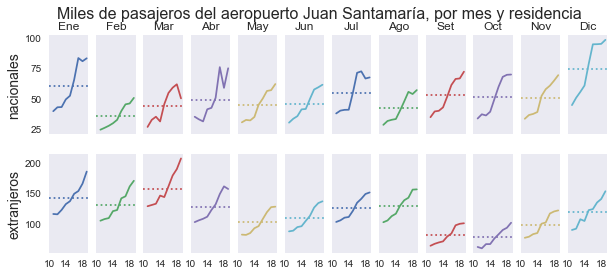
Cada año como serie individual, meses en el eje horizontal¶
fig, axs= plt.subplots(1,2, figsize=[10,3.5], sharex=True)
sjodatoscuadro['nacionales'].T.plot(ax=axs[0], cmap = 'Blues', marker='o', legend=False);
sjodatoscuadro['extranjeros'].T.plot(ax=axs[1], cmap = 'Blues', marker='o', legend=False);
for ax,tlt in zip(axs, ['Nacionales', 'Extranjeros']):
ax.set(xlabel='',
xticks=[3,6,9,12],
xticklabels = mesescorto[2::3],
xlim=[0.5,13.25],
ylabel='miles de pasajeros')
ax.grid(False, axis='y')
ax.set_title(tlt, size=14)
colores = [aa.get_color() for aa in ax.lines]
for (a,v), cc in zip(sjodatoscuadro[tlt.lower()].T.loc[12].iteritems(), colores):
ax.annotate(str(a), [12, v], color=cc)
fig.savefig(figpath+'SJO-pasajeros-por-mes2.pdf', bbox_inches='tight')
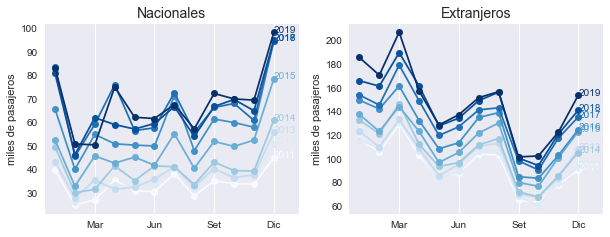
Estudiando la autocorrelación¶
def correlogramas4(serie, residencia, func):
fig, axs= plt.subplots(2,2, figsize=[15,4], sharex=True, sharey=True)
opts = dict(lags=24)
if func is plot_pacf:
opts['method'] = 'ols'
func(serie, **opts,ax=axs[0,0], title='$y_t$');
func(serie.diff(1).dropna(), **opts, ax=axs[0,1],title='$\Delta y_t$');
func(serie.diff(12).dropna(), **opts, ax=axs[1,0],title='$\Delta_{12}y_t$');
func(serie.diff(1).diff(12).dropna(), **opts, ax=axs[1,1],title='$\Delta\Delta_{12}y_t$');
for ax in axs.flat:
ax.set(xlim=[-0.5,24.5], xticks=np.arange(0,25,6))
pp = 'parcial' if (func is plot_pacf) else ''
fig.suptitle(f'Correlogramas {pp} de cantidad de pasajeros {residencia} en SJO', size=18)
return fig
nacionales = pd.DataFrame(np.log(sjodatos['nacionales'].values), index=pd.period_range('2011-01', '2019-12', freq='M'))
correlogramas4(nacionales, 'nacionales', plot_acf);
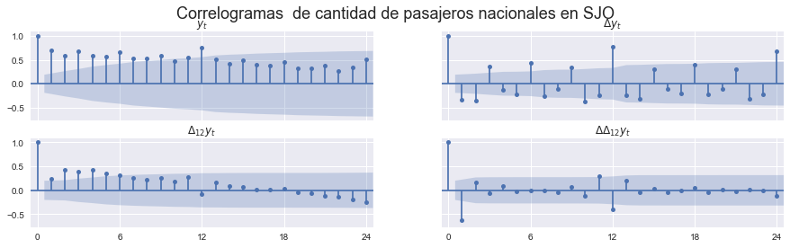
correlogramas4(nacionales, 'nacionales', plot_pacf);
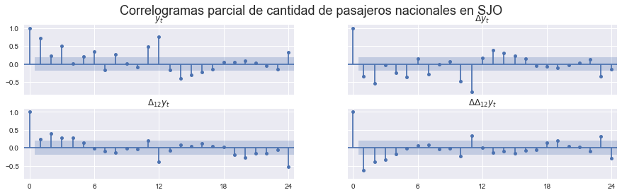
extranjeros = pd.DataFrame(np.log(sjodatos['extranjeros'].values), index=pd.period_range('2011-01', '2019-12', freq='M'))
fig = correlogramas4(extranjeros, 'extranjeros', plot_acf);
fig.savefig(figpath+'sjo-ACF-extranjeros.pdf', bbox_inches='tight')
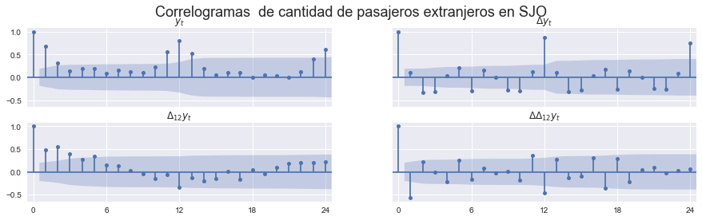
correlogramas4(extranjeros, 'extranjeros', plot_pacf);
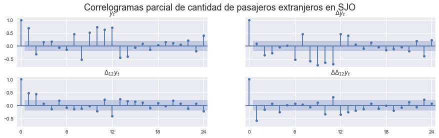
Estimación de un modelo SARIMA¶
Selección de orden usando X13¶
Pasajeros nacionales¶
resultado = x13_arima_select_order(nacionales, x12path=x13path, log=False)
print(f"Modelo escogido: SARIMA{resultado['order']}X{resultado['sorder']}")
Modelo escogido: SARIMA(0, 1, 2)X(0, 1, 1)
Pasajeros extranjeros¶
resultado = x13_arima_select_order(extranjeros, x12path=x13path, log=False)
print(f"Modelo escogido: SARIMA{resultado['order']}X{resultado['sorder']}")
Modelo escogido: SARIMA(0, 1, 1)X(0, 1, 1)
Estimación del modelo¶
Pasajeros nacionales¶
mod_nacionales = SARIMAX(nacionales, order=(0,1,2), seasonal_order=(0,1,1,12)).fit()
mod_nacionales.summary()
| Dep. Variable: | 0 | No. Observations: | 108 |
|---|---|---|---|
| Model: | SARIMAX(0, 1, 2)x(0, 1, [1], 12) | Log Likelihood | 110.232 |
| Date: | Sun, 24 Apr 2022 | AIC | -212.464 |
| Time: | 16:25:48 | BIC | -202.249 |
| Sample: | 01-31-2011 | HQIC | -208.336 |
| - 12-31-2019 | |||
| Covariance Type: | opg |
| coef | std err | z | P>|z| | [0.025 | 0.975] | |
|---|---|---|---|---|---|---|
| ma.L1 | -1.0127 | 0.102 | -9.967 | 0.000 | -1.212 | -0.814 |
| ma.L2 | 0.3374 | 0.099 | 3.408 | 0.001 | 0.143 | 0.531 |
| ma.S.L12 | -0.9026 | 0.332 | -2.716 | 0.007 | -1.554 | -0.251 |
| sigma2 | 0.0047 | 0.001 | 3.436 | 0.001 | 0.002 | 0.007 |
| Ljung-Box (L1) (Q): | 0.07 | Jarque-Bera (JB): | 3.29 |
|---|---|---|---|
| Prob(Q): | 0.79 | Prob(JB): | 0.19 |
| Heteroskedasticity (H): | 1.32 | Skew: | -0.17 |
| Prob(H) (two-sided): | 0.43 | Kurtosis: | 3.84 |
Warnings:
[1] Covariance matrix calculated using the outer product of gradients (complex-step).
Pasajeros extranjeros¶
mod_extranjeros = SARIMAX(extranjeros, order=(0,1,1), seasonal_order=(0,1,1,12)).fit()
with open(figpath+'SJO-extranjeros-SARIMA.tex','w') as archivo:
archivo.write(mod_extranjeros.summary().as_latex())
mod_extranjeros.summary()
| Dep. Variable: | 0 | No. Observations: | 108 |
|---|---|---|---|
| Model: | SARIMAX(0, 1, 1)x(0, 1, 1, 12) | Log Likelihood | 194.101 |
| Date: | Sun, 24 Apr 2022 | AIC | -382.202 |
| Time: | 16:25:49 | BIC | -374.540 |
| Sample: | 01-31-2011 | HQIC | -379.106 |
| - 12-31-2019 | |||
| Covariance Type: | opg |
| coef | std err | z | P>|z| | [0.025 | 0.975] | |
|---|---|---|---|---|---|---|
| ma.L1 | -0.6110 | 0.087 | -7.031 | 0.000 | -0.781 | -0.441 |
| ma.S.L12 | -0.7649 | 0.117 | -6.524 | 0.000 | -0.995 | -0.535 |
| sigma2 | 0.0009 | 0.000 | 6.347 | 0.000 | 0.001 | 0.001 |
| Ljung-Box (L1) (Q): | 0.05 | Jarque-Bera (JB): | 0.23 |
|---|---|---|---|
| Prob(Q): | 0.83 | Prob(JB): | 0.89 |
| Heteroskedasticity (H): | 1.56 | Skew: | 0.09 |
| Prob(H) (two-sided): | 0.21 | Kurtosis: | 3.16 |
Warnings:
[1] Covariance matrix calculated using the outer product of gradients (complex-step).
Pronósticos¶
def plot_forecast(modelo, serie, residencia, ax):
fcast = modelo.get_forecast('2020-12')
ci = np.exp(fcast.conf_int())
np.exp(fcast.predicted_mean).plot(ax=ax)
ax.fill_between(ci.index,'lower y', 'upper y', data=ci, alpha=0.5)
np.exp(serie).plot(ax=ax, legend=False)
ax.set(title=f'Pronóstico de pasajeros {residencia} en aeropuerto SJO')
return ax
fig, ax = plt.subplots(1,1, figsize=[8,3])
plot_forecast(mod_extranjeros, extranjeros['2015':], 'extranjeros', ax)
ax.set(ylabel='miles de pasajeros')
fig.savefig(figpath+'SJO-sarima-extranjeros-forecast.pdf', bbox_inches='tight')
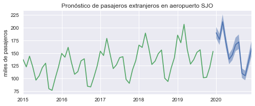
def cuadro(residencia):
temp = sjodatoscuadro[residencia]
temp.columns = mesescorto
temp.index.name = ''
temp.columns.name= ''
temp.round(0).astype(int).reset_index().to_latex(figpath + f'cuadro-SJO-{residencia}.tex', index=False)
return temp
ilustrado = cuadro('extranjeros').round(1).astype(str).iloc[5:,4:8]
v2019 = ilustrado.iloc[-1].values.copy()
rezagos = ['-36', '-24', '-12',r'\phantom{-00}']
ilustrado['May'] = ['']*4
ilustrado['Jun'] = ['']*4
ilustrado['Ago'] = [f'$y_{{t{lag}}}={v}$' for lag, v in zip(rezagos, ilustrado['Ago'])]
ilustrado['Jul'] = [f'$y_{{t{lag}-1}}$' for lag in rezagos]
ilustrado.iloc[-1,:3] = [f'$y_{{t{lag}}}={v}$' for lag, v in zip(['-3','-2','-1'], v2019[:-1])]
ilustrado.reset_index().to_latex(figpath + 'cuadro-SJO-ilustrado.tex',escape=False, index=False)
ilustrado
| May | Jun | Jul | Ago | |
|---|---|---|---|---|
| 2016 | $y_{t-36-1}$ | $y_{t-36}=138.7$ | ||
| 2017 | $y_{t-24-1}$ | $y_{t-24}=142.8$ | ||
| 2018 | $y_{t-12-1}$ | $y_{t-12}=156.0$ | ||
| 2019 | $y_{t-3}=128.2$ | $y_{t-2}=137.0$ | $y_{t-1}=151.4$ | $y_{t\phantom{-00}}=156.4$ |
Descomposición de una serie usando X13¶
def X13ARIMA(serie, show=False):
res = x13_arima_analysis(serie, x12path=x13path, log=False)
if show:
print(res.results)
temp = pd.concat([res.__getattribute__(componente) for componente in ['observed','seasadj','trend','irregular']], axis=1)
temp.columns = ['Serie original','Serie ajustada por estacionalidad','Serie tendencia ciclo','Componente irregular']
return temp
componentes = X13ARIMA(extranjeros, False)
componentes
| Serie original | Serie ajustada por estacionalidad | Serie tendencia ciclo | Componente irregular | |
|---|---|---|---|---|
| 2011-01 | 4.756276 | 4.509644 | 4.508827 | 0.000818 |
| 2011-02 | 4.657383 | 4.506701 | 4.511938 | -0.005237 |
| 2011-03 | 4.859316 | 4.516875 | 4.514741 | 0.002133 |
| 2011-04 | 4.635680 | 4.511089 | 4.517518 | -0.006429 |
| 2011-05 | 4.415377 | 4.530892 | 4.519544 | 0.011348 |
| ... | ... | ... | ... | ... |
| 2019-08 | 5.052423 | 4.948874 | 4.958813 | -0.009940 |
| 2019-09 | 4.617207 | 4.967796 | 4.968416 | -0.000620 |
| 2019-10 | 4.625345 | 5.022682 | 4.980319 | 0.042363 |
| 2019-11 | 4.805086 | 4.972898 | 4.992189 | -0.019291 |
| 2019-12 | 5.032521 | 5.022632 | 5.002369 | 0.020262 |
108 rows × 4 columns
fig = plt.figure(figsize=[12,6])
gs = plt.GridSpec(3,1,figure=fig, height_ratios=[4,1,1])
ax0 = fig.add_subplot(gs[0])
np.exp(componentes.iloc[:,:3]).plot(ax=ax0)
ax1 = fig.add_subplot(gs[1],sharex=ax0)
sfact = componentes['Serie original'] - componentes['Serie ajustada por estacionalidad']
np.exp(sfact).plot(ax=ax1)
ax2 = fig.add_subplot(gs[2],sharex=ax0, sharey=ax1)
np.exp(componentes['Componente irregular']).plot(ax=ax2)
ax0.set(title='Series original, ajustada por estacionalidad, y tendencia-ciclo')
ax1.set(title='Factor estacional')
ax2.set(title='Componente irregular')
fig.suptitle('Descomposición multiplicativa de la serie de pasajeros extranjeros en SJO, X13as', size=18)
fig.savefig(figpath+'SJO-extranjeros-descomposición.pdf', bbox_inches='tight')
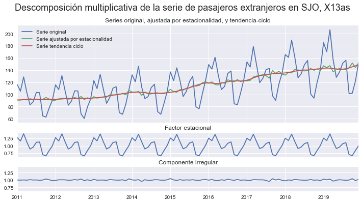
Graficando los factores¶
factores2019 = np.exp(sfact['2019':'2019'])
etiq = [f'{ff:.2f}' for ff in factores2019]
fig, ax = plt.subplots(figsize=[9,3])
ax.bar(mesescorto, factores2019-1)
ax.set(yticks=np.array([0.6,0.8,1.0,1.2,1.4])-1,
yticklabels = ['0.6','0.8','1.0','1.2','1.4'],
ylim=[-0.45,0.45])
ax.grid(False)
ax.axhline(0, color='red')
for mes, ff, tx in zip(range(12), factores2019.values, etiq):
offs = -1.025 if ff<1 else -0.975
ax.annotate(tx, (mes,ff+offs),ha='center', va='center')
ax.set(title='Factores estacionales de 2019')
fig.savefig(figpath+'SJO-extranjeros-seasonal-factor.pdf', bbox_inches='tight')
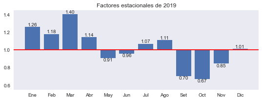
factores2019
2019-01 1.259537
2019-02 1.180528
2019-03 1.402092
2019-04 1.142952
2019-05 0.909268
2019-06 0.959711
2019-07 1.069695
2019-08 1.109101
2019-09 0.704274
2019-10 0.672108
2019-11 0.845513
2019-12 1.009938
Freq: M, dtype: float64
Comparando la tasa de crecimiento obtenida a partir de series ajustadas¶
fig, axs = plt.subplots(3,1,figsize=[12,6], sharex=True)
(100 * componentes[['Serie original','Serie tendencia ciclo']].diff(12)).plot(ax=axs[0])
(100 * componentes[['Serie original','Serie tendencia ciclo']].diff()).plot(ax=axs[1])
(100*((componentes[['Serie tendencia ciclo']].diff())*12)).plot(ax=axs[2])
(100 * componentes[['Serie tendencia ciclo']].diff(12)).plot(ax=axs[2])
axs[0].set(title='Tasa de crecimiento interanual')
axs[1].set(title='Tasa de crecimiento mensual')
axs[2].set(title='Tasa de crecimiento de la serie tendencia-ciclo')
axs[2].legend(['Mensual, anualizada', 'Interanual'])
for ax in axs:
ax.grid(False)
fig.savefig(figpath+'SJO-extranjeros-tasa-crecimiento.pdf', bbox_inches='tight')
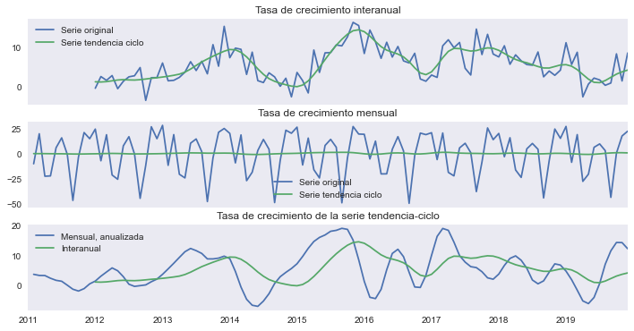